Hello, I'm Varun Yadav G
DevOps Engineer & Automation Enthusiast
I architect, automate, and optimize resilient cloud-native systems.
Fusing Infrastructure as Code, CI/CD, and container
orchestration to deliver secure, scalable solutions.



Specialties
- CI/CD Automation
- Cloud Infra (AWS/GCP/Azure)
- Docker & Kubernetes
- Monitoring & Security
Building the future of cloud automation.
Check out my projects or connect for collaboration!